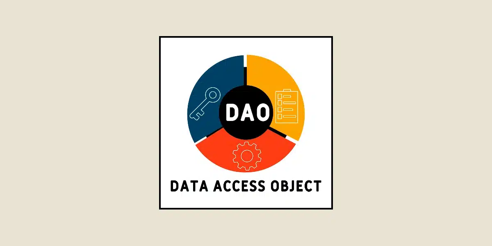

¿Qué es el Patrón DAO?
El patrón Data Access Object (DAO) es una estrategia que permite separar la lógica de acceso a datos de la lógica de negocio, facilitando así el mantenimiento, pruebas y escalabilidad de las aplicaciones.
¿Para qué sirve?
- Abstraer el acceso a la fuente de datos, permitiendo cambiar la implementación sin afectar la lógica de negocio.
- Centralizar la gestión de datos para mejorar su mantenimiento.
- Facilitar pruebas unitarias y de integración al desacoplar componentes.
Ventajas y Desventajas
- Ventajas: Modularidad, reutilización, mantenimiento sencillo y mejora en la gestión de transacciones.
- Desventajas: Puede agregar una capa extra y complejidad inicial al proyecto.
Paso a paso para aplicarlo en Java
- Definir las interfaces DAO con los métodos necesarios (CRUD, consultas, etc.).
- Crear clases que implementen esas interfaces con la lógica de acceso a base de datos.
- Utilizar la capa DAO desde la lógica de negocio o servicio.
- Implementar el manejo de transacciones y excepciones adecuadamente.
Ejemplo de código
Usuario.java (modelo):
package model;
import javax.persistence.Column;
import javax.persistence.Entity;
import javax.persistence.GeneratedValue;
import javax.persistence.GenerationType;
import javax.persistence.Id;
import javax.persistence.Table;
import javax.persistence.OneToMany;
import javax.persistence.CascadeType;
import java.util.List;
/**
*
* @author Lu0
*/
@Entity
@Table(name = "Usuarios")
public class Usuario {
@Id
@GeneratedValue(strategy = GenerationType.IDENTITY)
private int idUsuario;
@Column(name = "nombre")
private String nombre;
@Column(name = "apellido")
private String apellido;
@Column(name = "telefono")
private String telefono;
@Column(name = "correo")
private String correo;
@Column(name = "direccion")
private String direccion;
@Column(name = "genero")
private String genero;
@Column(name = "rol")
private String rol;
@Column(name = "estado")
private String estado;
@Column(name = "contrasena")
private String contrasena;
// Relación uno a muchos con CarritoProductos
@OneToMany(mappedBy = "usuario", cascade = CascadeType.ALL)
private List<Carrito> carritos;
// Relación uno a muchos con Facturas
@OneToMany(mappedBy = "usuario", cascade = CascadeType.ALL)
private List<Factura> facturas;
public Usuario() { }
public Usuario(int idUsuario, String nombre, String apellido, String telefono,
String correo, String direccion, String genero, String rol, String estado, String contrasena) {
this.idUsuario = idUsuario;
this.nombre = nombre;
this.apellido = apellido;
this.telefono = telefono;
this.correo = correo;
this.direccion = direccion;
this.genero = genero;
this.rol = rol;
this.estado = estado;
this.contrasena = contrasena;
}
}
UsuarioDAO.java (DAO):
package dao;
import java.sql.Connection;
import java.sql.PreparedStatement;
import java.sql.ResultSet;
import java.sql.SQLException;
import java.util.ArrayList;
import java.util.List;
import model.Usuario;
/**
*
* @author Lu0
*/
public class UsuarioDAO {
private Connection conexion;
public UsuarioDAO() {
this.conexion = ConexionBD.getConexion();
}
public List<Usuario> listarTodos() throws SQLException {
List<Usuario> usuarios = new ArrayList<>();
String sql = "SELECT * FROM Usuarios";
try (PreparedStatement stmt = conexion.prepareStatement(sql);
ResultSet rs = stmt.executeQuery()) {
while (rs.next()) {
Usuario usuario = new Usuario();
usuario.setIdUsuario(rs.getInt("idUsuario"));
usuario.setNombre(rs.getString("nombre"));
usuario.setApellido(rs.getString("apellido"));
usuario.setTelefono(rs.getString("telefono"));
usuario.setCorreo(rs.getString("correo"));
usuario.setDireccion(rs.getString("direccion"));
usuario.setGenero(rs.getString("genero"));
usuario.setRol(rs.getString("rol"));
usuario.setEstado(rs.getString("estado"));
usuario.setContrasena(rs.getString("contrasena"));
usuarios.add(usuario);
}
}
return usuarios;
}
}
Capa intermedia - Servlet de listar:
package controller;
import dao.UsuarioDAO;
import java.io.IOException;
import java.sql.SQLException;
import java.util.List;
import javax.servlet.ServletException;
import javax.servlet.annotation.WebServlet;
import javax.servlet.http.HttpServlet;
import javax.servlet.http.HttpServletRequest;
import javax.servlet.http.HttpServletResponse;
import model.Usuario;
/**
*
* @author Lu0
*/
@WebServlet("/ServletListarUsuarios")
public class ServletListarUsuarios extends HttpServlet {
private final UsuarioDAO usuarioDAO = new UsuarioDAO();
@Override
protected void doGet(HttpServletRequest request, HttpServletResponse response)
throws ServletException, IOException {
try {
List<Usuario> usuarios = usuarioDAO.listarTodos();
request.setAttribute("listaUsuarios", usuarios);
request.getRequestDispatcher("listaUsuarios.jsp").forward(request, response);
} catch (SQLException e) {
request.setAttribute("error", "Error al cargar la lista de usuarios: " + e.getMessage());
request.getRequestDispatcher("error.jsp").forward(request, response);
}
}
}
¿Qué es la capa de servicio?
La capa de servicio es una capa adicional entre la capa DAO y la capa de presentación que contiene la lógica de negocio. Su función principal es manejar reglas, validaciones, y coordinación de llamadas a múltiples DAOs si es necesario.
- Permite mantener el código organizado y reutilizable.
- Centraliza la lógica que no pertenece ni a la base de datos ni a la interfaz.
- Facilita la implementación de transacciones y seguridad.